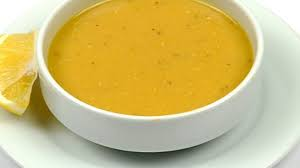

Mercimek Çorbası

Mercimek çorbası, Türk mutfağının vazgeçilmezlerinden biridir. Hem besleyici hem de lezzetli olan bu çorba, özellikle soğuk günlerde sıcacık bir başlangıç sunar.
Mercimek çorbası, Türk mutfağının vazgeçilmezlerinden biridir. Hem besleyici hem de lezzetli olan bu çorba, özellikle soğuk günlerde sıcacık bir başlangıç sunar.
Soğan, havuç ve patatesi küp şeklinde doğrayın. Sıvı yağda soğanı kavurun, ardından havuç ve patatesi ekleyin. Mercimekleri ekleyin ve su ile pişirin. Sebzeler yumuşayınca çorbayı blender ile pürüzsüz hale getirin ve baharatları ekleyin. ve Çorbanız hazır
